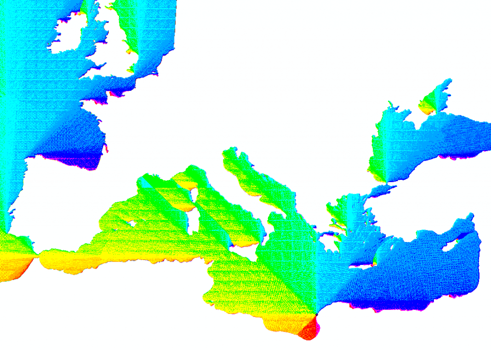
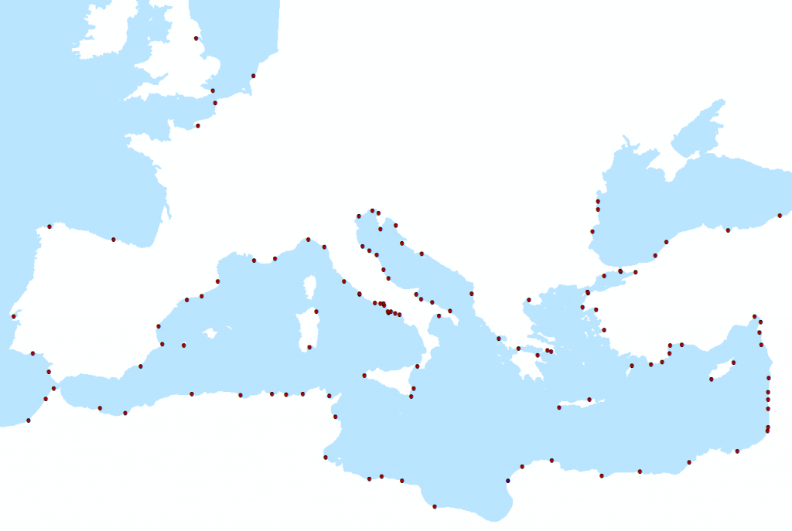
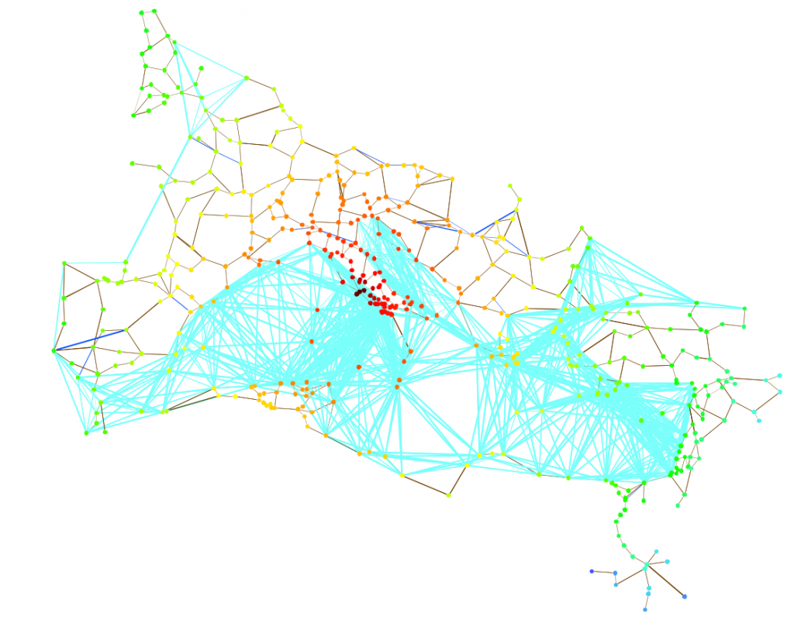
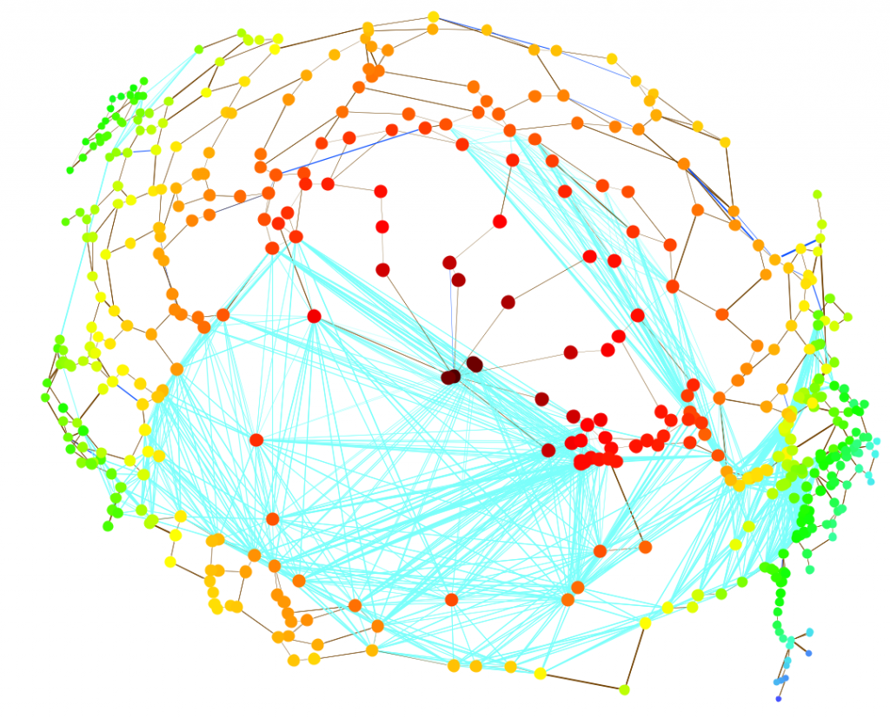

As it stands, it’s trivial enough to find shortest paths through a network and shortest paths across a topography. In the first case, you would use established algorithms to determine distance across a network for which there are numerous in-code and pseudocode examples. In the second case, the traditional method is to create a cost-surface based on slope or vector ruggedness that is then used to discover a least cost path between one point and another. I found it necessary to bring these two methods together when we turned to integrating sea travel in the Mediterranean with the existing itinerary-based land routes.


Coastal sites under examination.
While historical reports give network-like descriptions of sea routes–such as the length in stades or the duration in days from Carthago Nova to Lilybaeum–the variety of source and destination information given only reinforces that once a ship leaves port it’s “route” may consist of any number of permutations developed out of a variety of possible coastal sites. It would be incorrect to draw only a few lines connecting the various points above in the same way lines represent roads connecting cities. Instead, we should find some way to represent that the coastal port acts as a point of transition from topology to topography and provide mechanisms to account for it.
One way to bridge this gap is by deploying cost surfaces and cost path calculations to provide a set of edges from and to every node that borders on one of these regions. In the case of the Imperial Roman network, this consisted of 123 sites that were within 5km of the coastline. Cost surface rasters can be large and time consuming, and producing a 500m scale cost surface 123 times requires a bit of scripting. ArcGIS provides Python geoprocessing through the ArcPy scripting window, but there are a wide variety of geoprocessing scripts available to do just the kind of calculations described below–and probably more elegantly. I used ArcGIS, though, and started with a shapefile containing all of my points, which I iterated through to create individual shapefiles for each point and build the cost distance for each:
.#First iterate through your layer to create a set of new shapefiles
.#Alternately, you can pair the code below and create just one new shapefile and one new cost surface
.#for each site
.x = 0
. while x <= numberOfSites:
. expression = '"FID" = ' + str(x)
. arcpy.SelectLayerByAttribute_management("sites_shapefile","NEW_SELECTION",expression)
. secexpression = "spu" + str(x)
. arcpy.CopyFeatures_management("sites_shapefile",secexpression)
. x += 1
#Then create a cost distance raster for each site
.x = 0
.while x <= numberOfSites:
. expression = "spu" + str(x)
. costDist = arcpy.sa.CostDistance(expression,"cost_raster")
. secexpression = "c:\\costpath\\cpa" + str(x)
. costDist.save(secexpression)
. x += 1

Each cost surface will look something like the one above. The individual routes can be derived by creating a backlink raster and running least cost paths but they’re created as raster lines and as such need to be created one at a time if you want to transform them into polylines. While it is nice to have the path of each individual route, you can simply sample the cost surface using the Zonal Statistics tool in ArcGIS to create your Source to Target pairs for insertion into your network:
.#Zonal Statistics as a Table is a plugin for Spatial Analyst
.x = 0
.while x <= numberOfSites:
. input = "c:\\costpath\\cpa" + str(x)
. output = "c:\\costpath\\ztab" + str(x)
. newtable = arcpy.sa.ZonalStatisticsAsTable("sites_shapefile","sites_shapefile.FID",input,output,"NODATA","MINIMUM")
. x += 1
.#Join these tables to your original list of sites:
.x = 0
.while x <= numberOfSites:
. output = "c:\\costpath\\ztab" + str(x)
. arcpy.JoinField_management("sites_shapefile","FID",output,"FID","MIN")
. x += 1
The result is a long table that shows the distance from every site to every other site–fundamental network data in the form of SOURCE, TARGET, DISTANCE. I don’t know of any method that ArcPy offers to split up this data, so I used PHP to transform it into a tall edge table. After that, you can make the network more realistic by imposing an upper bound on distance or time traveled (In the case of the Imperial Roman network, the longest reported time on sea was 12 days) to remove the clutter created from ahistorical direct Egypt-to-England routes. The result is actually quite compelling, despite the relatively simplistic manner in which routes were created.  


Along with improving the accuracy of the Mediterranean cost to account for seasonal changes in wind and maritime risk, the next step is to functionalize this capability. The simplicity of distance queries in the topologically-aware by default PostGIS2, coupled with its support for raster data in tabular format and 3D awareness seem to mark it as the best choice for developing this functionality, but I’m still a ways away recapitulating this work in PostGIS, especially as a function. By providing this kind of “off-road capability” to our geographic networks we prevent ourselves from allowing the data model to constrain research questions or force the research to live in multiple, incompatible formats. This is also a reasonable method to build a geographic network out of a traditional GIS. But, while it is hopefully straightforward enough to build networks out of topographical cost surfaces, I think the most intellectually stimulating possibilities involve modeling the relationship between topography and topology, to see how armies move along and off networks, how paths of least cost become established routes between points, and how points become nodes, whether for long duration or not.